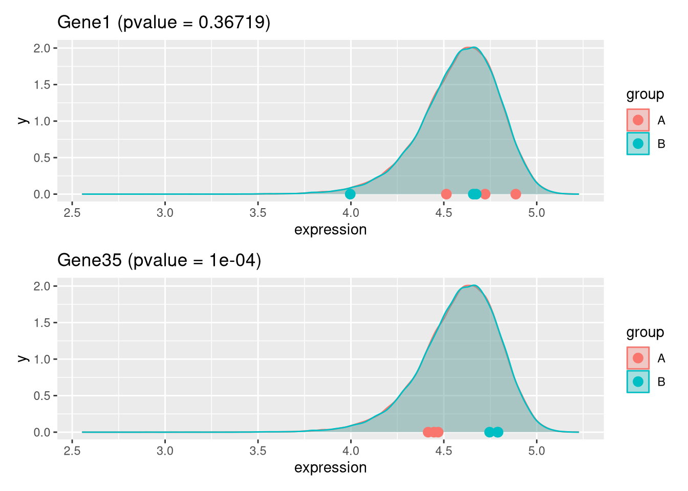
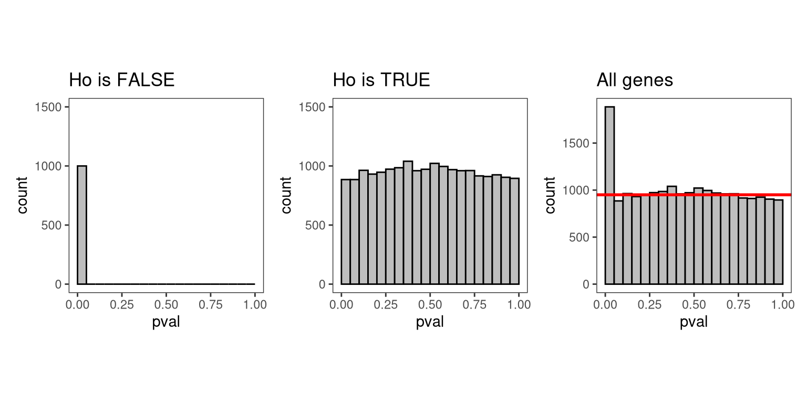

Chapter 4 False discovery rate
Objective
- Address the multiple testing issue.
4.1 Multiple testing
In the few examples of linear model that we have seen in the previous
section, the lm() function was always applied to a single gene. In a
real RNA-seq experiment, we will have a few thousand tests to perform,
as each gene is going to be tested.
Let’s use the exp dataset that provides log expression values for 20,000 genes
in 6 samples, three in groupA and three in groupB. You can download it
here.
## # A tibble: 20,000 × 7
## Gene A1 A2 A3 B1 B2 B3
## <chr> <dbl> <dbl> <dbl> <dbl> <dbl> <dbl>
## 1 Gene1 4.72 4.89 4.51 4.00 4.66 4.67
## 2 Gene2 4.61 4.96 4.58 4.53 4.21 4.78
## 3 Gene3 4.75 4.70 4.75 4.55 4.89 4.31
## 4 Gene4 4.83 4.83 4.43 4.53 4.38 4.55
## 5 Gene5 4.68 4.33 4.84 4.58 4.64 4.92
## 6 Gene6 4.57 4.74 4.68 4.84 4.42 4.96
## 7 Gene7 4.68 4.47 4.50 4.55 4.23 4.67
## 8 Gene8 4.59 4.81 4.44 4.45 4.20 4.61
## 9 Gene9 4.53 4.84 4.51 4.53 4.61 4.59
## 10 Gene10 4.74 4.09 4.61 4.33 4.72 4.61
## # ℹ 19,990 more rowsLet’s apply a t-test on all these genes:
res <- exp |>
rowwise() |>
mutate(pval = t.test(c(A1, A2, A3), c(B1, B2, B3))$p.value) |>
ungroup() ## to revert the rowwise()
res## # A tibble: 20,000 × 8
## Gene A1 A2 A3 B1 B2 B3 pval
## <chr> <dbl> <dbl> <dbl> <dbl> <dbl> <dbl> <dbl>
## 1 Gene1 4.72 4.89 4.51 4.00 4.66 4.67 0.367
## 2 Gene2 4.61 4.96 4.58 4.53 4.21 4.78 0.362
## 3 Gene3 4.75 4.70 4.75 4.55 4.89 4.31 0.474
## 4 Gene4 4.83 4.83 4.43 4.53 4.38 4.55 0.249
## 5 Gene5 4.68 4.33 4.84 4.58 4.64 4.92 0.632
## 6 Gene6 4.57 4.74 4.68 4.84 4.42 4.96 0.679
## 7 Gene7 4.68 4.47 4.50 4.55 4.23 4.67 0.682
## 8 Gene8 4.59 4.81 4.44 4.45 4.20 4.61 0.286
## 9 Gene9 4.53 4.84 4.51 4.53 4.61 4.59 0.689
## 10 Gene10 4.74 4.09 4.61 4.33 4.72 4.61 0.773
## # ℹ 19,990 more rowsQuestion
How many significant genes did we obtained ? Which genes are of possible biological interest?
Solution
##
## FALSE TRUE
## 19324 676## # A tibble: 676 × 8
## Gene A1 A2 A3 B1 B2 B3 pval
## <chr> <dbl> <dbl> <dbl> <dbl> <dbl> <dbl> <dbl>
## 1 Gene13793 4.41 4.38 4.42 4.75 4.74 4.73 0.0000613
## 2 Gene35 4.47 4.45 4.42 4.79 4.75 4.79 0.000104
## 3 Gene5006 4.79 4.78 4.75 4.56 4.59 4.57 0.000194
## 4 Gene8102 4.31 4.30 4.35 4.60 4.67 4.64 0.000258
## 5 Gene11686 4.58 4.60 4.61 4.77 4.74 4.75 0.000266
## 6 Gene18641 4.35 4.42 4.35 4.78 4.70 4.78 0.000432
## 7 Gene1936 4.47 4.54 4.49 4.79 4.86 4.86 0.000437
## 8 Gene14972 4.07 4.15 4.20 4.67 4.55 4.68 0.000963
## 9 Gene3211 4.74 4.81 4.75 4.38 4.30 4.42 0.00122
## 10 Gene10421 4.44 4.48 4.47 4.56 4.59 4.57 0.00153
## # ℹ 666 more rowsThe data above have been generated with the rnorm() function for all
samples.
This is the code that generated the data:
Question
- Do you still think any of the features show significant differences?
- Why do we obtain genes with a p-value < 0.05?
Solution
A p-value of 0.05 means that we accept 5% chance of getting this data if no real difference existed (if the null hypothesis was really true).
In other words, choosing a cut off of 0.05 means that we accept 5% chance to wrongly reject the null hypthesis (resulting in a false positive).

4.2 Adjustment for multiple testing
In a typical RNA-seq experiment, we may test around 20,000 genes, but only a fraction of them are expected to be truly affected by the drug. Imagine a drug treatment that modifies the expression of about 1000 genes, but that has no impact on the other ones.
The first histogram bellow shows how the distribution of p-values for truly modified genes (\(H_0\) is false) would look like: most, if not all of the p-values would be very small. Using a p-value cutoff of 0.05 should permit to identify most of these differentially expressed genes.
The second histogram shows the distribution of p-values for unmodified genes (\(H_0\) is true). Here the p-values are uniformly distributed between 0 and 1, and we can see that by chance, 5% of these genes appear to be significant (defined by a p-value < 0.05) even though this is only by chance as the drug had no real effect on them.
The third histogram illustrates the principle behind the False discovery rate (FDR) adjustment. As the statistical test is done on the whole set of genes, the resulting p-values will have a distribution corresponding to the combination of both histograms. Most of the p-values are uniformly distributed between 0 and 1 but there is a spike to the left close to zero, due to those p-values for which \(H_0\) is false.

The False discovery rate (FDR) computes the expected fraction of false positives among all discoveries. It allows us to choose \(n\) results with a given FDR.
The most widely used FDR adjustment methods in omics data analysis is Benjamini-Hochberg (Benjamini and Hochberg 1995) and q-values (Storey et al. 2026).
Let’s use the p.adjust() function to adjust the p-values calculated
previously (from the t-test we did on data generated with the
rnorm() function)
## # A tibble: 20,000 × 9
## Gene A1 A2 A3 B1 B2 B3 pval padj
## <chr> <dbl> <dbl> <dbl> <dbl> <dbl> <dbl> <dbl> <dbl>
## 1 Gene1 4.72 4.89 4.51 4.00 4.66 4.67 0.367 0.993
## 2 Gene2 4.61 4.96 4.58 4.53 4.21 4.78 0.362 0.993
## 3 Gene3 4.75 4.70 4.75 4.55 4.89 4.31 0.474 0.993
## 4 Gene4 4.83 4.83 4.43 4.53 4.38 4.55 0.249 0.993
## 5 Gene5 4.68 4.33 4.84 4.58 4.64 4.92 0.632 0.993
## 6 Gene6 4.57 4.74 4.68 4.84 4.42 4.96 0.679 0.993
## 7 Gene7 4.68 4.47 4.50 4.55 4.23 4.67 0.682 0.993
## 8 Gene8 4.59 4.81 4.44 4.45 4.20 4.61 0.286 0.993
## 9 Gene9 4.53 4.84 4.51 4.53 4.61 4.59 0.689 0.993
## 10 Gene10 4.74 4.09 4.61 4.33 4.72 4.61 0.773 0.993
## # ℹ 19,990 more rows